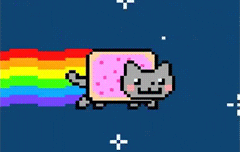

Question 1

This is Nyan Cat
This is Kocheng
If nyan cat's poop is rainbow and kocheng's poop is a normal cat's poop. What will their baby's poop if they are having a child?
a. SemRanSemPo(semiRainbowsemiPoop)
b. Normal poop since Kocheng has a dominant gen
c. Que Sera Sera
d. Rainbow poop since nyan Cat has a dominant gen
×
Yes it's true. Why we care about someone's poop. Just mind our own poop business.
next question